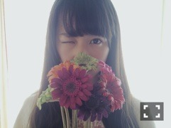
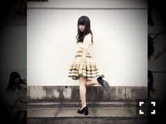
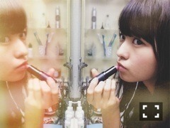
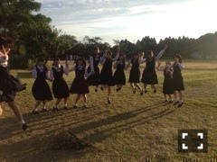

| 2014/09 12 Fri | なんでもないふり。 600回目 |
祝600回！！
質問募集しただけで
1000件超えるコメントくるとは...
たくさんの方がこのブログを
読んでくださってるんだなあ〜
と感激致しました。
厳選したけど、いつもより長文。
ゆっくり読んでください。
コーナーに分けたから見やすいはず！
女の子向けなコーナー充実。
◆名前◆

まりかって名前じゃなかったら
どんな名前が良かった？
万理華って書くの大変だから
漢字一文字とかはちょっと羨ましい。
自分は万理華という漢字が
すごく素敵だなっと思うのですが、
どういう意味でつけられたのでしょう？
万 花満開
理 賢く
華 華やかで美しく
私も気に入っています！
この通りになりたいものだ。
◆ファッション◆

服を選ぶ時大切にしてることは？
持っている服に合うか重視。
良いと思ったらどんなに
着ないお店のものでも買う。
家にはどのくらいの服があるの？
ついこの間整理をして
少なくなったけど、うーん。
クローゼット大きくしたい笑
どんな服装してる人が好き？
シンプルな服さらっと着てるとか
でっかいニットとかマフラーとかに
メンズライクな靴最高。
今年流行るロング丈のアウターも
もともと好きなんだ〜
男の人も女の人も！甘辛が好き。
ファッションで
1
番意識してる
というか、ここだけは譲れない
ってものあったら教えて！
普通過ぎず、シルエット良く。
毎日私服を考えるコツとかある？
考えるのが好きなんですよ〜！
服買う時は直感派？？
じっくり吟味する派？？
直感で良い！って思ったら
目を付けといて他も回ってみる派。
ファッションは
どんなところから
インスピレーション
を
受けてるんでしょうか？
母の存在が大きいです。
母の持ってる本読んで
たくさん真似てきました。
オシャレの参考にしてる人とか
雑誌とかあったら教えてください
装苑、花椿、Rookie、マッシュ
◆スキンケアお化粧他◆

使ってる化粧品
教えてほしいです
ナチュラグラッセの下地(パープル)
24hコスメのスティックファンデ
オンリーミネラルのパウダーファンデ
CANMAKEのクリームチーク
REVLONのパウダーチーク
目元はほとんどKATE
エテュセのリップエッセンス
BURT'S BEESのリップクリーム
普段はこんな感じ。統一感の無さ。
まりかのメイクとかすごい好き
なんだけど、気を付けてるとこ、
ポイントとかってどこ〜？
短時間で仕上げてるからか、
めっちゃ薄いですたぶん！
ライン太くし過ぎないし、
化粧品はキラキラは苦手だから
マットなものを選びます。
肌にはオーガニックを選ぶ。
遊ぶ時は赤リップしたり、
カラーシャドウ目尻に付けたり！
カラーマスカラもしてみたいなー
香水何を使ってますか？
ローズドゥボヌール
オードトワレ ジョルネ
最近初めて香水買った。
使ってるシャンプーとか
化粧水とか知りたいです
スキンケアは定番の
ハトムギ化粧水とニベア。
奈々未に勧められて
DHCのオイルも最近買ったよ！
シャンプーはずっとアフィニア。
たまにローズドマラケシュ。
スタイル維持のために
なにされてますかー？
シャンプーしながら
スクワットしてる内もも鍛える。
筋肉質なのでストレッチと
マッサージで解します。
夜は炭水化物控えるよ〜
コンビニ行ったらトマトジュース、
豆乳、ヨーグルトよく買う。
間食はドライフルーツとナッツ！
たまに持ち歩いてるよ。
◆髪の毛◆

普段髪の毛を巻いているんですか？
すんげーゆるく巻いてくださいと
ヘアメイクさんにいつも頼んでます。
もう基本のヘアスタイルかな。
前髪セットどうやっていますか？
くりんと軽く巻いて流します。
好きな髪色は？
グリーン系のアッシュしてみたい。
おんなのこのどんな髪型に
惹かれますか！
また、してみたいですか！
また、してみたいですか！
無造作！！ゆるウェーブ。
肩くらいの長さを
切りっぱなしとか可愛い。
いつかしてみたいです。
◆ライブ◆
パフォーマンスするに
あたって
気を付けてる事って
ありますか？
自分なりの解釈でそれぞれの
曲の雰囲気をつくろうとしてます。
まりっかが踊ってる時ってまりっかの
周りがキラキラして見えるんだけど、
あれは覇気ですか？オーラですか？
キラキラ...汗かもしれない。
でも、ライブで見て
こいつなんか違う
見ていて飽きないなと思って
もらえるようになりたいです。
私、まりっかのしなやかなダンス、
ほんと好きなんですよー。
でもそのままじゃ...、
って記事にありました。
しなやかすぎて『力が抜けている』
って演出の方から言われてから、
意識してることって、
具体的にはどんなことですか？
アクセントになる部分を
もっと強くすることを
意識するようになりました。
しなやか過ぎてもダメなんだよね。
もっと頑張らなきゃ〜
アンダーライブの魅力とまりっかの
ここに注目！を教えてください。
モニターがない分、ひとりひとりを
自分の目で見ることができる。
手作り感と親近感。
本当の意味でライブを体感できる。
それがアンダーライブの魅力！
言っておこう。来ないと損だぞ！
がんばって喋ってるまりっかも
なかなか貴重なのでMCにも注目。
◆自分のこと◆
とにかく、個人PVでもブログ写メ、
メディア写真でも逸材と言うか
独特の個性が光まくりだけど、
昔から変わった女の子だった？
好奇心旺盛なの。
たしかに乃木坂に入ってから
変だよねが徐々に
まりかっぽいねになってるかも。
昔は周りの子が羨ましくて
逆に流行に乗りたいって
思ってました。今は違うけど
ファッションとか演技とか絵とか、
独創的だなーって羨ましいんだけど、
まりっか流の「個性の磨き方」
みたいなものはありますか？？
今は自分の個性のひとつになって
いるものはほとんど親譲りだけど、
周りに流されないことで
磨かれていくんだと思います！
これからも好きなことは
とことん追求していきたい。
ここ数ヶ月のまりかちゃんの進化が
著しいんやけど、まりかちゃんの中で
気持ちとか考え方とかにどんな変化が
あったんかな？
最近周りからよく言われるなあ。
でもアンダーライブがなかったら
なんの変化もなかったと思う。
次のアンダーライブでも
いろんな意味でまた気持ちが
変わるんだろうな。
万理華自身、自分はこの一年で
女性へ転換していったと思いますか？
何か実体験があれば添えて
お願いします。
そして周りから
そう思われていることについて
どう思いますかー？
周りから言われるだけで
自分では何も思わないけど、、
そう思われるのは嬉しいです。
ただ、服装のトーンが低くなった
というか、モードに興味津々。
まりかは運動神経いいし
ダンスもうまいけど、
学生時代なにかスポーツしてたの？
4歳から15歳まで
クラシックバレエ一筋でした！
小さい頃の将来の夢はなんだった？
バレリーナ、漫画家、
ファッションデザイナー
乃木坂入って3年だけど
一番変わったなと思うところは
どこでしょうか？そして今後も
変わりたくない部分は？
生活が一変したけど、
カメラ嫌い克服して寧ろ
撮られることが好きになったことは
なんか、凄いなって思った。
これからも自然体でいたい。
雑誌でのグラビアや、季刊乃木坂、
生写真等、様々な撮影があると
思いますが、撮影の際、
万理華が何か心掛けていることは
ありますか？
自分がいちばん楽しんでやる！
◆ブログ◆

毎回ブログのタイトル
どうやって決めてるの？
印象に残ったこと、言葉遊び。
コメントでタイトルについて触れて
いろんな解釈をしてくれるのが
楽しい笑
ブログのタイトルって
内容と関係ないの？
9割関係ないで
◆メンバー◆

メンバーで趣味が似てるのは誰？
まいまい、かりんちゃん、未央奈...
可愛いと思うのが一緒な気がする。
ジャンル全然違うけど、川後も！
とある雑誌でみなみちゃんが
プチ反抗期を脱したのはアンダーの
ときに、まりっかがアドバイス
してくれたおかげだと
みなみちゃん本人が語って
おりましたが、さようですか？
さよう！そう受け取ってくれてた
なんて...なんだか良かったです。
アドバイスというか、
私が好きなみなみを勝手に
語ってたんです。こういう雰囲気は
みなみにしかできないとか
あのMVのみなみ素敵とか...
そのインタビュー載ってた
季刊のみなみも大好き。
◆乃木坂46◆

乃木坂の衣装、制服では
何が好きですか？
衣装は5th、制服は3rdと4thかな！
10thのジャケ写のも好き。
乃木坂の曲の中でまりかの1番
好きな曲というか思い入れの
ある曲は何かなぁ？
バレッタ好きです。
あと初ユニットの他の星から
ここにいる理由は思い出いっぱい！
これまでの楽曲の中で
まりか的ナンバーワンは？
・歌 ・ダンス ・MV
・歌 ・ダンス ・MV
悩むけど、、
歌はやっぱり君の名は希望。
ダンスはここにいる理由。
MVはシャキイズム、13金、
月の大きさ、扇風機。
10枚目のアンダー楽曲は
どんな感じ？
表題曲とは違った爽やかさ、
ちょっと切ない。ざっくりし過ぎ？
早くパフォーマンスしたいな。
やってて一番楽しい仕事、
好きな仕事はなんですか？
ライブ、写真、お芝居
制作期間がほんとに好きなの。
◆その他◆
最近観た映画で面白かった作品は？
鍵泥棒のメソッド
最近借りてきた映画の中でも
すごい面白いなって思ってたら
内田監督が今回の表題曲MVを
担当すると聞いてびっくりした。
好きなバンドは？
東京事変、APOGEE、空想委員会
好きなアニメって何？
坂道のアポロン
オススメの漫画を教えてください。
たいようのいえ
好きな恐竜なんですか？
デイノニクス！
無難だがステゴサウルスの
シルエットが好き。
どんな画家とか
アーティストが好きなの？？
シュルレアリスムを
感じる作品が好きです。
苔を好きになった理由教えて！
緑好きからの延長線上が苔でした。
気づいたら眺めてた。
素朴で誰にも注目されないところが
愛おしくてたまらんのです。
最近の気になる尊敬する人はいます？
たくさんいます！
制作で関わってきた監督さん。
クリエイティブな
お仕事をされてる方。
勉強になることばかりです。
以上！
ご協力ありがとうございました。
そしてここまで
読んでくれてありがとう。

コメント(612)
2014/09/12 14:24